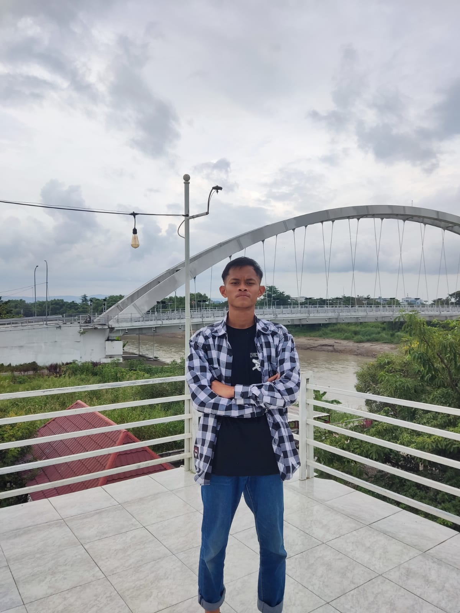

Selamat datang di website portofolio saya
Saya memiliki pengalaman organisasi di divisi Kewirausahaan (KWU), di mana saya terlibat dalam berbagai kegiatan yang berkaitan dengan pengembangan usaha dan kreativitas anggota. Dalam divisi ini, saya belajar merancang ide usaha, bekerja sama dalam tim, serta mengelola kegiatan yang berorientasi pada peningkatan nilai ekonomi. Pengalaman ini juga melatih saya menjadi lebih kreatif, komunikatif, dan bertanggung jawab.